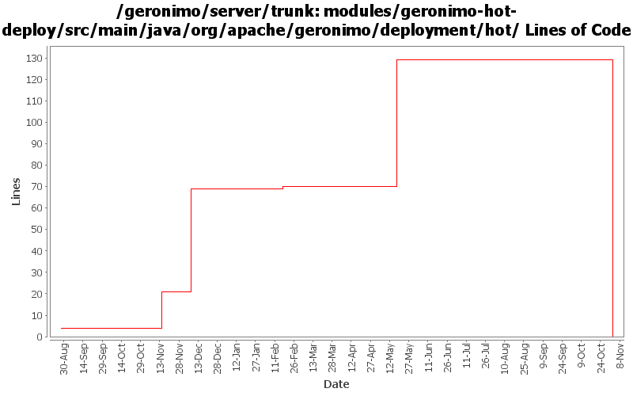

[root]/modules/geronimo-hot-deploy/src/main/java/org/apache/geronimo/deployment/hot

| Author | Changes | Lines of Code | Lines per Change |
|---|---|---|---|
| Totals | 22 (100.0%) | 178 (100.0%) | 8.0 |
| dwoods | 3 (13.6%) | 70 (39.3%) | 23.3 |
| vamsic007 | 4 (18.2%) | 53 (29.8%) | 13.2 |
| gdamour | 3 (13.6%) | 28 (15.7%) | 9.3 |
| hogstrom | 1 (4.5%) | 20 (11.2%) | 20.0 |
| kevan | 5 (22.7%) | 6 (3.4%) | 1.2 |
| akulshreshtha | 1 (4.5%) | 1 (0.6%) | 1.0 |
| prasad | 3 (13.6%) | 0 (0.0%) | 0.0 |
| jdillon | 2 (9.1%) | 0 (0.0%) | 0.0 |
GERONIMO-3565. Modules distributed amongst framework/modules and plugins
0 lines of code changed in 3 files:
GERONIMO-3231 Hot deployment error when restart server
1 lines of code changed in 1 file:
GERONIMO-1431 Make deploy tool and hot deploy directory work better together. Rakesh, thanks for the patch.
69 lines of code changed in 2 files:
GERONIMO-3011 Resolve sharedlib and hot deploy directory relative to GERONIMO_BASE
1 lines of code changed in 1 file:
Second attempt to change the way the online/offline deployers and the JSR88
deployment driver work. The first attempt was breaking the TCK amd the
eclipse plugin.
Online deployer, i.e. deployer.jar, boots a Kernel to load its dependencies,
e.g. geronimo-deploy-tool, and registers the available ModuleConfigurers with
the DeploymentManager.
ModuleConfigurers to be registered are loaded by the persistent configuration
list jsr88-configurer-config.xml.
In the case of an offline deployment, the online deployer starts the
offline-deployer configuration within the same Kernel. In turn, the
offline-deployer configuration starts a list of configurations to register
the available module builders.
Add a log4j configuration for the online deployer.
DeploymentFactoryBootstrapper is the new JSR88 deployment driver. It boots a
kernel; starts the configuration list jsr88-configurer-config.xml; retrieves
the "actual" DeploymentFactory implementation from the kernel; and delegates
to this retrieved imoplementation.
The JSR88 JAR driver is now named jsr88-deploymentfactory.jar.
This fixes:
* GERONIMO-2794 - Improve online deployer to register ModuleConfigurers from the repository; and
* GERONIMO-2767 - Minimize side effects of the offline deployer
26 lines of code changed in 1 file:
Revert deployer changes as they do break the Eclipse plugin and TCK.
I will investigate offline.
svn merge -r503370:503369 .
1 lines of code changed in 1 file:
Online deployer, i.e. deployer.jar, boots a Kernel to load its dependencies,
e.g. geronimo-deploy-tool, and registers the available ModuleConfigurers with
the DeploymentManager.
ModuleConfigurers to be registered are loaded by the persistent configuration
list jsr88-configurer-config.xml.
In the case of an offline deployment, the online deployer starts the
offline-deployer configuration within the same Kernel. In turn, the
offline-deployer configuration starts a list of configurations to register
the available module builders.
Add a log4j configuration for the online deployer.
This fixes:
* GERONIMO-2794 - Improve online deployer to register ModuleConfigurers from the repository; and
* GERONIMO-2767 - Minimize side effects of the offline deployer
1 lines of code changed in 1 file:
GERONIMO-2402 Redeployment fails after third iteration.
o Integrating the patch provided by Rakesh Midha
o The Problem is caused by first update operation. The first time hot-deployer tries to update the changes, it redeployes the application which means the application configid is changes. This change is not reflected in hotdeployer list. Which mean next time any operation is done on this application hotdeployer fails because the application configid being used doesn't exist now.
o Instead of void the fileUpdated method of DirectoryHotDeployer.java now returns new configId as string, and in DirectoryMonitor.java this configId is updated in actions fileinfo.
22 lines of code changed in 2 files:
GERONIMO-2584 Hot deploy module/server restart, throws IllegalArgumentException if application deployed using hotdeployment
o Integrated the patch provided by Rakesh Midha
o Patch adds getModuleId in DirectoryHotDeployer, and change calculateModuleId to use it, also defination of getModuleId is added in listener interface. Changed calculateModuleId() to use newly added method getModuleId() from DirectoryHotDeployer. This newly added method returns configId of deployed application.
31 lines of code changed in 2 files:
GERONIMO-2537 Update the src headers in server/trunk/modules to be compliant with the new ASF src header and copyright policy (http://www.apache.org/legal/src-headers.html). I also did some cleanup of the src headers and tried to make them all a consistent format
6 lines of code changed in 5 files:
GERONIMO-1813 - Applied HotDeployer patch
20 lines of code changed in 1 file:
Use logging instead of System.out and printStackTrace
0 lines of code changed in 2 files: